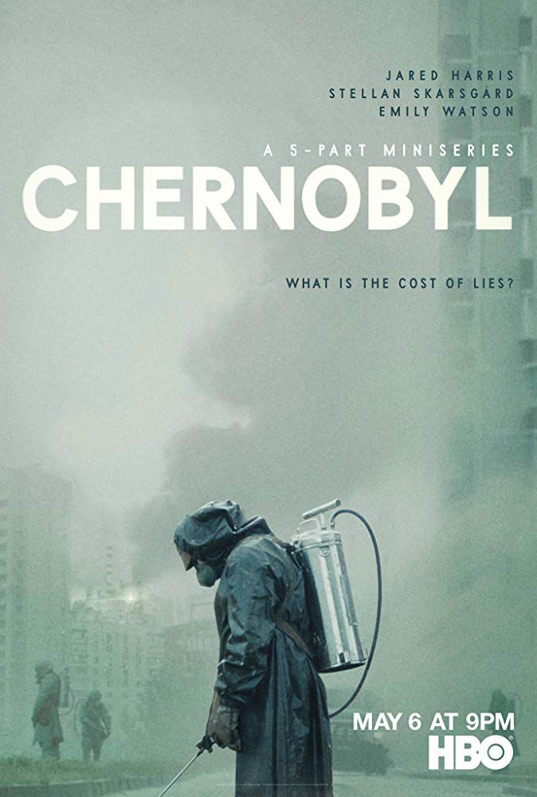
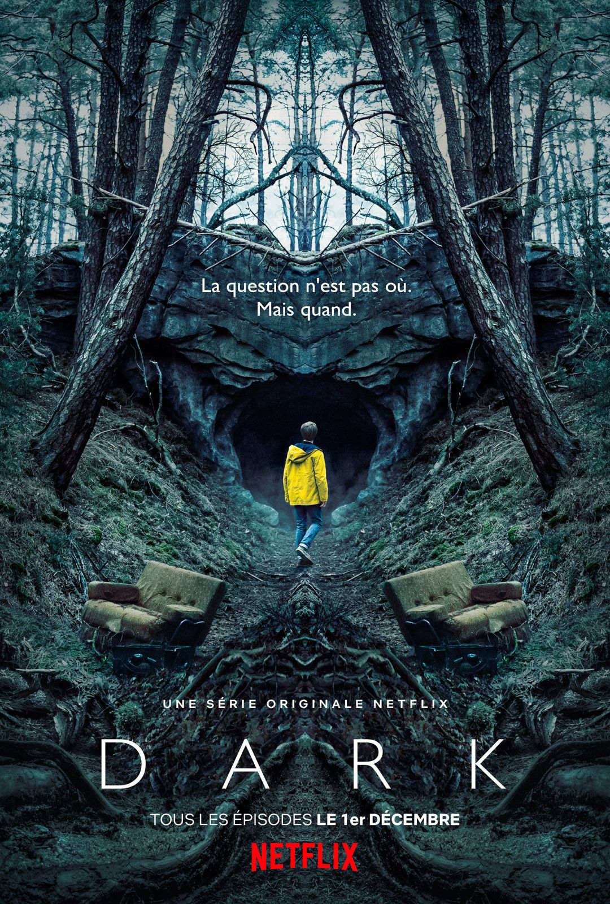
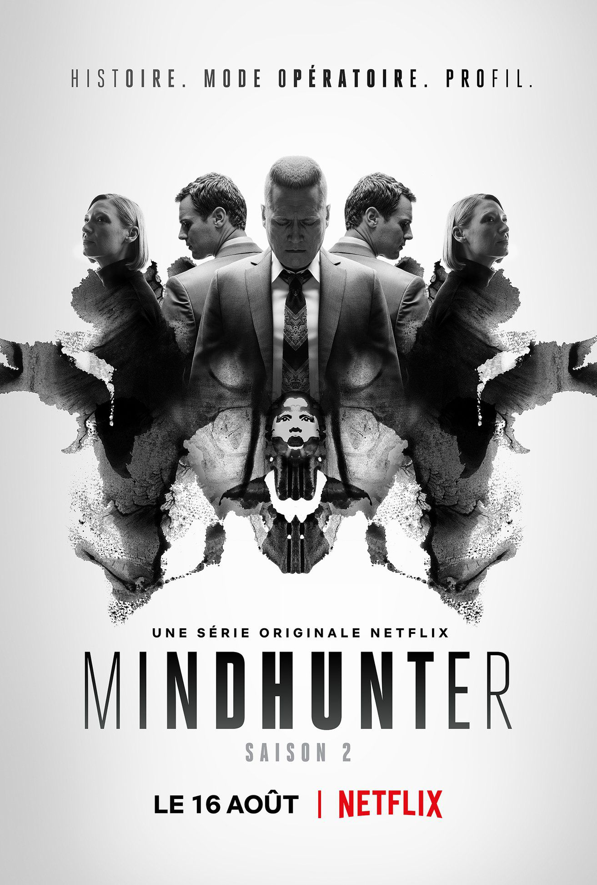
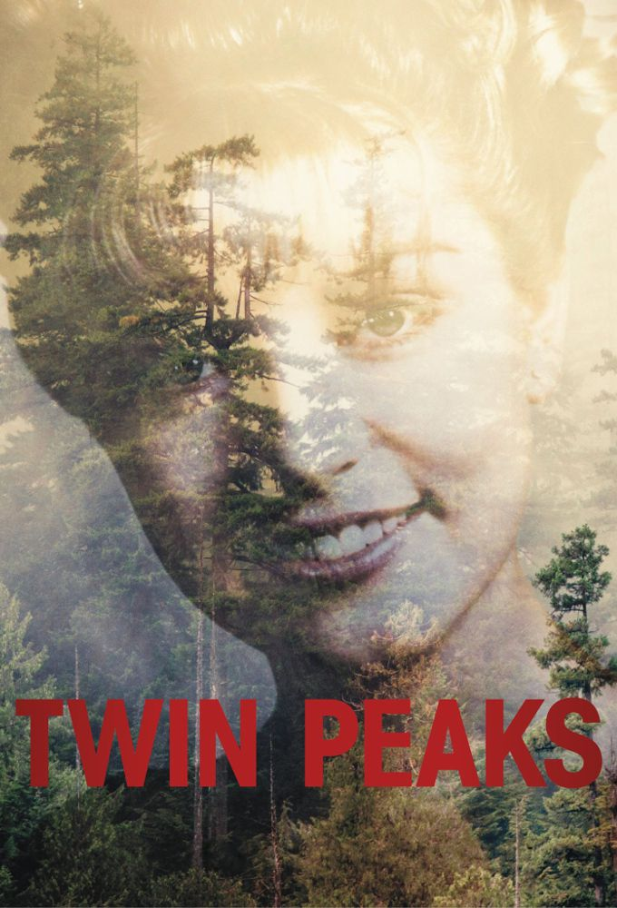
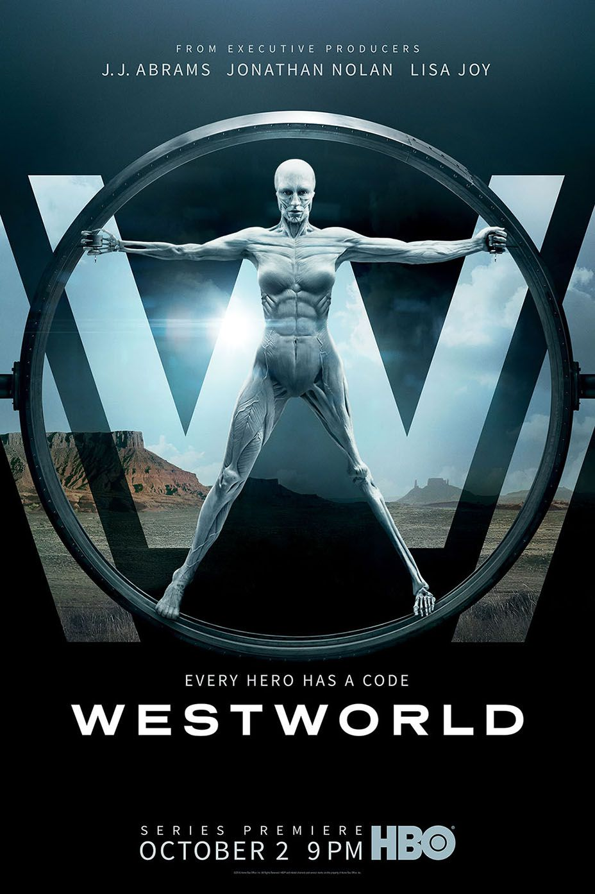
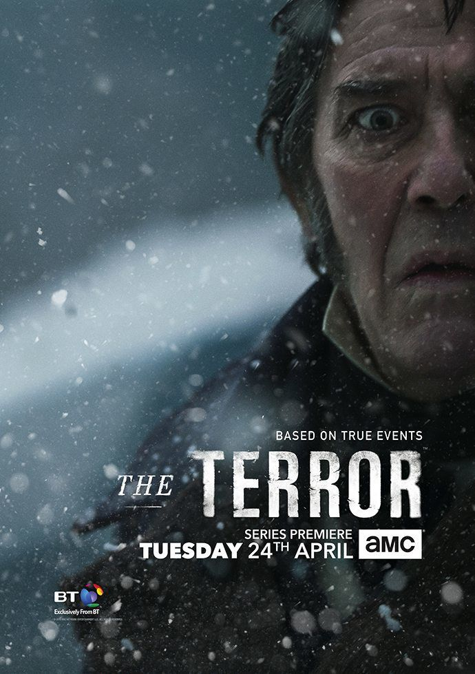
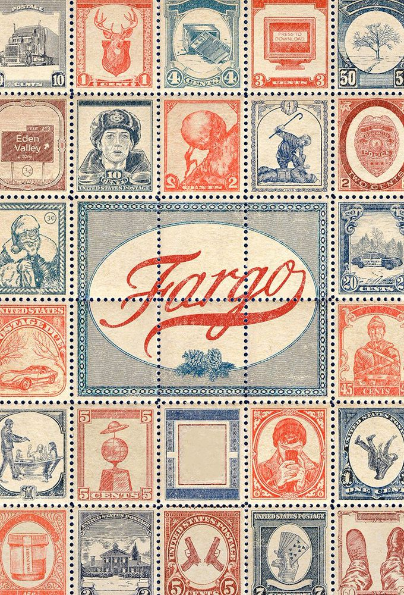
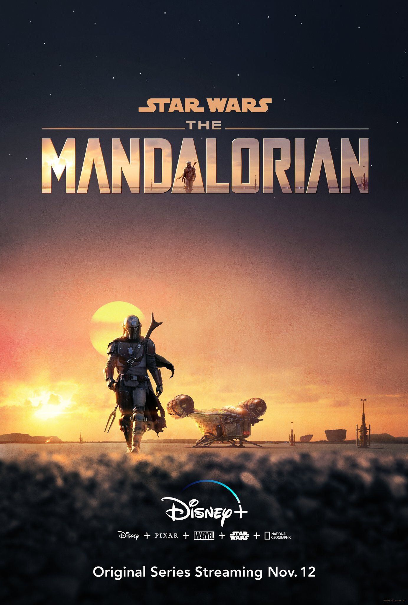

Axel's Series Collection
Dive into Axel best series. You will find all these preferred series, in no order of preference.

Drame
Historique
Chernobyl
By Craig Mazin
26 avril 1986, l'histoire vraie de la pire catastrophe causée par l'homme et de
ceux qui
ont
sacrifié leur vie pour sauver l'Europe du drame.

Policier
Science-fiction
Dark
By Baran bo Odar et Jantje Friese
Un enfant disparu lance quatre familles dans une quête éperdue pour trouver des
réponses.
La chasse au coupable fait émerger les péchés et les secrets d'une petite ville.

Drame
Thriller
MindHunter
By Joe Penhall
Comment anticiper la folie quand on ignore comment fonctionnent les fous? Deux
agents du FBI imaginent une enquête aux méthodes révolutionnaires.
Drame
Thriller
Mr.Robot
By Sam Esmail
Elliot est un jeune programmeur antisocial qui souffre d'un trouble du
comportement.
Il est recruté par un anarchiste mystérieux, qui se fait appeler Mr. Robot.

Drame
Thriller
Twin Peaks
By David Lynch
Un meurtre a été commis à Twin Peaks, une petite bourgade en apparence
tranquille.
La jeune Laura Palmer est retrouvée morte nue au bord d'un lac.

Thriller
Science-fiction
Westworld
By Jonathan Nolan et Lisa Joy
Westworld, un parc d'attractions dernier cri, les visiteurs paient des
fortunes pour revivre le frisson de la conquête de l'Ouest.

Drame
Thriller
The Terror
Joe Penhall
En 1847, la Marine Royale britannique entreprend une périlleuse mission :
découvrir le passage du Nord.
Forcé de prendre le commandement, le capitaine Francis Crozier devra gérer
le froid glacial, les menaces de mutinerie, le manque de nourriture ainsi
qu'une menace bien pire encore...

Drame
Policier
True Detective
By Nic Pizzolatto
A chaque saison, son histoire. True Detective nous embarque dans des récits
policiers mêlant mysticisme, réflexions philosophiques et personnages
torturés.

Comedy
Policier
Fargo
By Noah Hawley
Un meurtre a été commis à Twin Peaks, une petite bourgade en
apparence
tranquille.
La jeune Laura Palmer est retrouvée morte nue au bord d'un lac.

Aventure
Science-fiction
The Mandalorian
By Baran bo Odar et Jantje Friese
Un enfant disparu lance quatre familles dans une quête éperdue pour
trouver
des
réponses.
La chasse au coupable fait émerger les péchés et les secrets d'une
petite
ville.